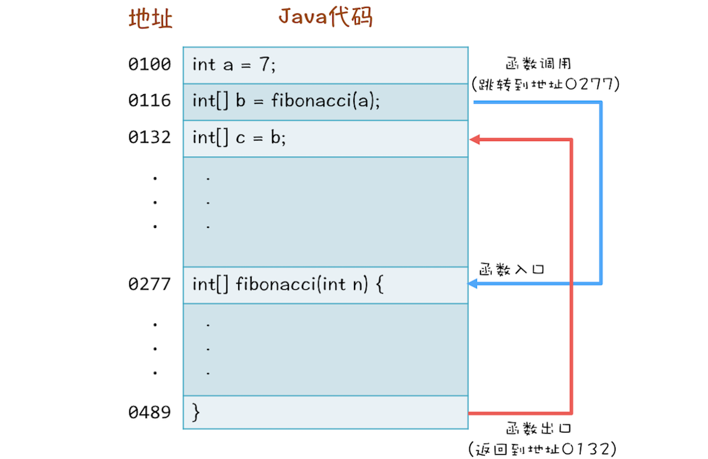
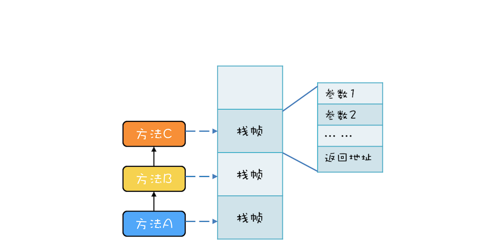
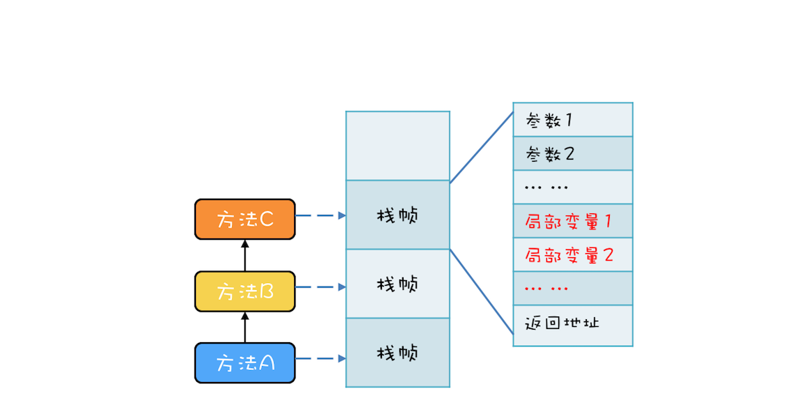
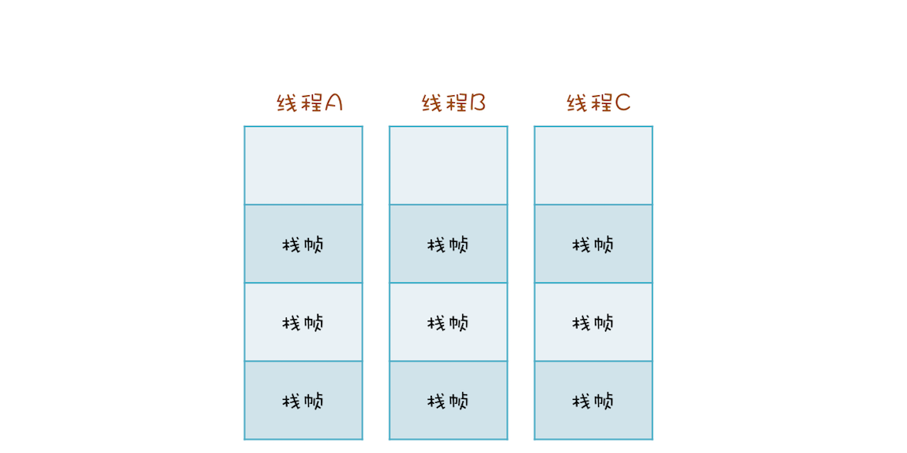

- 00 学习攻略 如何才能学好并发编程？.md
- 00 开篇词 你为什么需要学习并发编程？.md
- 01 可见性、原子性和有序性问题：并发编程Bug的源头.md
- 02 Java内存模型：看Java如何解决可见性和有序性问题.md
- 03 互斥锁（上）：解决原子性问题.md
- 04 互斥锁（下）：如何用一把锁保护多个资源？.md
- 05 一不小心就死锁了，怎么办？.md
- 06 用“等待-通知”机制优化循环等待.md
- 07 安全性、活跃性以及性能问题.md
- 08 管程：并发编程的万能钥匙.md
- 09 Java线程（上）：Java线程的生命周期.md
- 10 Java线程（中）：创建多少线程才是合适的？.md
- 11 Java线程（下）：为什么局部变量是线程安全的？.md
- 12 如何用面向对象思想写好并发程序？.md
- 13 理论基础模块热点问题答疑.md
- 14 Lock和Condition（上）：隐藏在并发包中的管程.md
- 15 Lock和Condition（下）：Dubbo如何用管程实现异步转同步？.md
- 16 Semaphore：如何快速实现一个限流器？.md
- 17 ReadWriteLock：如何快速实现一个完备的缓存？.md
- 18 StampedLock：有没有比读写锁更快的锁？.md
- 19 CountDownLatch和CyclicBarrier：如何让多线程步调一致？.md
- 20 并发容器：都有哪些“坑”需要我们填？.md
- 21 原子类：无锁工具类的典范.md
- 22 Executor与线程池：如何创建正确的线程池？.md
- 23 Future：如何用多线程实现最优的“烧水泡茶”程序？.md
- 24 CompletableFuture：异步编程没那么难.md
- 25 CompletionService：如何批量执行异步任务？.md
- 26 Fork_Join：单机版的MapReduce.md
- 27 并发工具类模块热点问题答疑.md
- 28 Immutability模式：如何利用不变性解决并发问题？.md
- 29 Copy-on-Write模式：不是延时策略的COW.md
- 3 个用户来信 打开一个新的并发世界.md
- 30 线程本地存储模式：没有共享，就没有伤害.md
- 31 Guarded Suspension模式：等待唤醒机制的规范实现.md
- 32 Balking模式：再谈线程安全的单例模式.md
- 33 Thread-Per-Message模式：最简单实用的分工方法.md
- 34 Worker Thread模式：如何避免重复创建线程？.md
- 35 两阶段终止模式：如何优雅地终止线程？.md
- 36 生产者-消费者模式：用流水线思想提高效率.md
- 37 设计模式模块热点问题答疑.md
- 38 案例分析（一）：高性能限流器Guava RateLimiter.md
- 39 案例分析（二）：高性能网络应用框架Netty.md
- 40 案例分析（三）：高性能队列Disruptor.md
- 41 案例分析（四）：高性能数据库连接池HiKariCP.md
- 42 Actor模型：面向对象原生的并发模型.md
- 43 软件事务内存：借鉴数据库的并发经验.md
- 44 协程：更轻量级的线程.md
- 45 CSP模型：Golang的主力队员.md
- 用户来信 真好，面试考到这些并发编程，我都答对了！.md
- 结束语 十年之后，初心依旧.md
11 Java线程（下）：为什么局部变量是线程安全的？
我们一遍一遍重复再重复地讲到，多个线程同时访问共享变量的时候，会导致并发问题。那在Java语言里，是不是所有变量都是共享变量呢？工作中我发现不少同学会给方法里面的局部变量设置同步，显然这些同学并没有把共享变量搞清楚。那Java方法里面的局部变量是否存在并发问题呢？下面我们就先结合一个例子剖析下这个问题。
比如，下面代码里的 fibonacci() 这个方法，会根据传入的参数 n ，返回 1 到 n 的斐波那契数列，斐波那契数列类似这样： 1、1、2、3、5、8、13、21、34……第1项和第2项是1，从第3项开始，每一项都等于前两项之和。在这个方法里面，有个局部变量：数组 r 用来保存数列的结果，每次计算完一项，都会更新数组 r 对应位置中的值。你可以思考这样一个问题，当多个线程调用 fibonacci() 这个方法的时候，数组 r 是否存在数据竞争（Data Race）呢？
// 返回斐波那契数列
int[] fibonacci(int n) {
// 创建结果数组
int[] r = new int[n];
// 初始化第一、第二个数
r[0] = r[1] = 1; // ①
// 计算2..n
for(int i = 2; i < n; i++) {
r[i] = r[i-2] + r[i-1];
}
return r;
}
你自己可以在大脑里模拟一下多个线程调用 fibonacci() 方法的情景，假设多个线程执行到 ① 处，多个线程都要对数组r的第1项和第2项赋值，这里看上去感觉是存在数据竞争的，不过感觉再次欺骗了你。
其实很多人也是知道局部变量不存在数据竞争的，但是至于原因嘛，就说不清楚了。
那它背后的原因到底是怎样的呢？要弄清楚这个，你需要一点编译原理的知识。你知道在CPU层面，是没有方法概念的，CPU的眼里，只有一条条的指令。编译程序，负责把高级语言里的方法转换成一条条的指令。所以你可以站在编译器实现者的角度来思考“怎么完成方法到指令的转换”。
方法是如何被执行的
高级语言里的普通语句，例如上面的r[i] = r[i-2] + r[i-1];翻译成CPU的指令相对简单，可方法的调用就比较复杂了。例如下面这三行代码：第1行，声明一个int变量a；第2行，调用方法 fibonacci(a)；第3行，将b赋值给c。
int a = 7；
int[] b = fibonacci(a);
int[] c = b;
当你调用fibonacci(a)的时候，CPU要先找到方法 fibonacci() 的地址，然后跳转到这个地址去执行代码，最后CPU执行完方法 fibonacci() 之后，要能够返回。首先找到调用方法的下一条语句的地址：也就是int[] c=b;的地址，再跳转到这个地址去执行。 你可以参考下面这个图再加深一下理解。

方法的调用过程
到这里，方法调用的过程想必你已经清楚了，但是还有一个很重要的问题，“CPU去哪里找到调用方法的参数和返回地址？”如果你熟悉CPU的工作原理，你应该会立刻想到：通过CPU的堆栈寄存器。CPU支持一种栈结构，栈你一定很熟悉了，就像手枪的弹夹，先入后出。因为这个栈是和方法调用相关的，因此经常被称为调用栈。
例如，有三个方法A、B、C，他们的调用关系是A->B->C（A调用B，B调用C），在运行时，会构建出下面这样的调用栈。每个方法在调用栈里都有自己的独立空间，称为栈帧，每个栈帧里都有对应方法需要的参数和返回地址。当调用方法时，会创建新的栈帧，并压入调用栈；当方法返回时，对应的栈帧就会被自动弹出。也就是说，栈帧和方法是同生共死的。

调用栈结构
利用栈结构来支持方法调用这个方案非常普遍，以至于CPU里内置了栈寄存器。虽然各家编程语言定义的方法千奇百怪，但是方法的内部执行原理却是出奇的一致：都是靠栈结构解决的。Java语言虽然是靠虚拟机解释执行的，但是方法的调用也是利用栈结构解决的。
局部变量存哪里？
我们已经知道了方法间的调用在CPU眼里是怎么执行的，但还有一个关键问题：方法内的局部变量存哪里？
局部变量的作用域是方法内部，也就是说当方法执行完，局部变量就没用了，局部变量应该和方法同生共死。此时你应该会想到调用栈的栈帧，调用栈的栈帧就是和方法同生共死的，所以局部变量放到调用栈里那儿是相当的合理。事实上，的确是这样的，局部变量就是放到了调用栈里。于是调用栈的结构就变成了下图这样。

保护局部变量的调用栈结构
这个结论相信很多人都知道，因为学Java语言的时候，基本所有的教材都会告诉你 new 出来的对象是在堆里，局部变量是在栈里，只不过很多人并不清楚堆和栈的区别，以及为什么要区分堆和栈。现在你应该很清楚了，局部变量是和方法同生共死的，一个变量如果想跨越方法的边界，就必须创建在堆里。
调用栈与线程
两个线程可以同时用不同的参数调用相同的方法，那调用栈和线程之间是什么关系呢？答案是：每个线程都有自己独立的调用栈。因为如果不是这样，那两个线程就互相干扰了。如下面这幅图所示，线程A、B、C每个线程都有自己独立的调用栈。

线程与调用栈的关系图
现在，让我们回过头来再看篇首的问题：Java方法里面的局部变量是否存在并发问题？现在你应该很清楚了，一点问题都没有。因为每个线程都有自己的调用栈，局部变量保存在线程各自的调用栈里面，不会共享，所以自然也就没有并发问题。再次重申一遍：没有共享，就没有伤害。
线程封闭
方法里的局部变量，因为不会和其他线程共享，所以没有并发问题，这个思路很好，已经成为解决并发问题的一个重要技术，同时还有个响当当的名字叫做线程封闭，比较官方的解释是：仅在单线程内访问数据。由于不存在共享，所以即便不同步也不会有并发问题，性能杠杠的。
采用线程封闭技术的案例非常多，例如从数据库连接池里获取的连接Connection，在JDBC规范里并没有要求这个Connection必须是线程安全的。数据库连接池通过线程封闭技术，保证一个Connection一旦被一个线程获取之后，在这个线程关闭Connection之前的这段时间里，不会再分配给其他线程，从而保证了Connection不会有并发问题。
总结
调用栈是一个通用的计算机概念，所有的编程语言都会涉及到，Java调用栈相关的知识，我并没有花费很大的力气去深究，但是靠着那点C语言的知识，稍微思考一下，基本上也就推断出来了。工作了十几年，我发现最近几年和前些年最大的区别是：很多技术的实现原理我都是靠推断，然后看源码验证，而不是像以前一样纯粹靠看源码来总结了。
建议你也多研究原理性的东西、通用的东西，有这些东西之后再学具体的技术就快多了。
课后思考
常听人说，递归调用太深，可能导致栈溢出。你思考一下原因是什么？有哪些解决方案呢？
欢迎在留言区与我分享你的想法，也欢迎你在留言区记录你的思考过程。感谢阅读，如果你觉得这篇文章对你有帮助的话，也欢迎把它分享给更多的朋友。
© 2019 - 2023 Liangliang Lee. Powered by gin and hexo-theme-book.